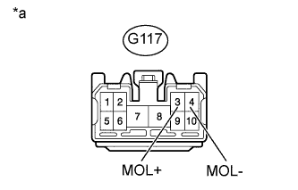

DTC B2007 Обрыв в цепи электродвигателя левого ремня безопасности |
| Код DTC | Условие обнаружения DTC | Неисправный участок |
| B2007 | В ходе первоначальной проверки или при нахождении замка зажигания в состоянии ON (ВКЛ) в цепи электродвигателя левого ремня безопасности в течение не менее 1 с регистрируется обрыв (напряжение на контакте MOL+ составляет 8,5 В или выше, а напряжение на контакте MOL- ниже 2 В). |
|
| 1.ПРОВЕРЬТЕ ЦЕПЬ ЛЕВОГО ПЕРЕДНЕГО РЕМНЯ С КАТУШКОЙ И ПРЕДНАТЯЖИТЕЛЕМ В СБОРЕ |
|  |
Отсоедините разъем G117 ЭБУ.
Измерьте сопротивление в соответствии со значениями, приведенными в таблице ниже.
| Контакты для подключения диагностического прибора | Режим | Заданные условия |
| G117-3 (MOL+) - G117-4 (MOL-) | Всегда | Менее 20 Ом |
| *a | Вид спереди разъема со стороны жгута проводов: (к ЭБУ ремней безопасности) |
|
| ||||
| OK | ||
| ||
| 2.ПРОВЕРЬТЕ ЖГУТ ПРОВОДОВ И РАЗЪЕМ (ЛЕВЫЙ ПЕРЕДНИЙ РЕМЕНЬ С КАТУШКОЙ И ПРЕДНАТЯЖИТЕЛЕМ – ЭБУ РЕМНЕЙ БЕЗОПАСНОСТИ) |
Отсоедините разъем G117 ЭБУ.
Отсоедините разъем R3 ремня.
С помощью технологического провода соедините контакты R3-1 (MOL+) и R3-2 (MOL-) разъема левого переднего ремня безопасности.
Измерьте сопротивление в соответствии со значениями, приведенными в таблице ниже.
| Контакты для подключения диагностического прибора | Условие | Заданные условия |
| G117-3 (MOL+) - G117-4 (MOL-) | Всегда | Менее 2 Ом |
|
| ||||
| OK | ||
| ||